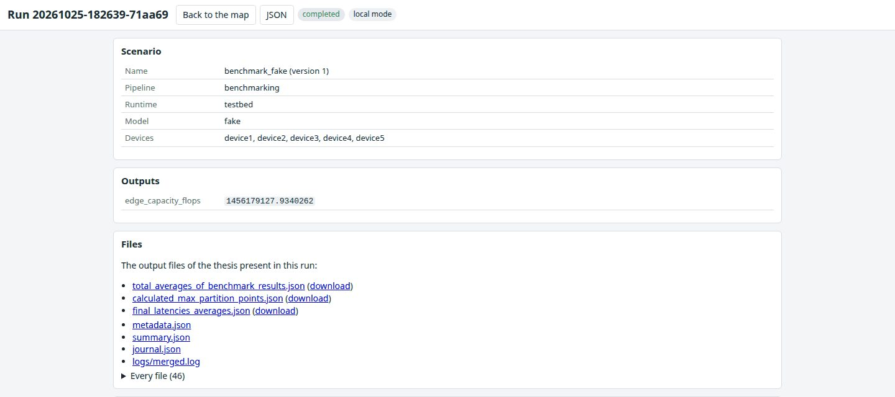

Where should a neural network be cut when the device that captured the input cannot run all of it in time? The answer depends on numbers that only real hardware gives: how long each layer takes on a particular board under a particular load, how many bytes cross the link at each candidate cut, how the wireless channel behaves that minute, and how long a request waits at the edge server behind requests from other devices. Simulation can rank options. It cannot produce those numbers.
The Distributed Inference Testbed exists to produce them. It is the experimental platform of my PhD thesis, described in its Chapter 3 and Appendix B, and it has carried every hardware measurement in the thesis: the validation of the DNN partitioning model, the per-head and per-block profiles of decoder-only language models, and the HeadSplit experiments on distributed LLM inference. It is also a piece of software that anyone can clone and run in five minutes without owning a single board. This article walks through what it is, what one experiment does, what it measures, and what makes the results repeatable.
What is on the rack
The hardware is deliberately ordinary. Five Raspberry Pi 4 Model B boards sit on an open rack, two with 8 GB of memory and three with 4 GB, each with a 32 GB microSD card and no accelerator of any kind. Two to three metres away stands the edge server, an Intel i7-9700K desktop with 32 GB of memory. A USB 802.11ac adapter on that machine hosts an isolated 5 GHz access point. Nothing else is on that network, and it hands out no default route, so the delays we measure belong to our own traffic. The boards and their accessories cost roughly 450 to 500 euros, and the setup guide in the repository lists every part.
Each board also has an Ethernet cable to a small switch. That wired network carries SSH, result collection, NTP and package installation. The wireless network carries inference traffic and nothing else, so a log transfer can never compete with the measurement it is logging.
The edge server runs chrony as the NTP server for both networks. Each board polls it every few seconds, and a run refuses to start if any device's clock offset exceeds one millisecond. Optional INA260 sensors sit in the 5 V supply line of each board and report current, voltage and power over I2C, which is what turns a latency testbed into an energy testbed as well.
One scenario, one experiment
An experiment is one YAML file. It names the model, the devices, the repetitions and the seed, the scheduling policy of the edge server, and per device the network conditions, the compute load and any hardware constraints. A sweep field turns one scenario into a family of runs. This is the scenario that validates the DNN partitioning model under both scheduling policies:
name: ch4_validation
model: alexnet
devices: [device1, device2, device3, device4]
repetitions: 5
seed: 2024
edge_server: {policy: SJF, nominal_frequency: true, profile_capacity: true}
inference: {enabled: true, partition_points: [0, 2, 4, 8, 11], repetitions: 50}
load:
device2: {mode: processes, processes: 1}
device3: {mode: processes, processes: 2}
device4: {mode: processes, processes: 3}
optimisation: {enabled: true, algorithm: greedy, objective: total_delay}
sweep: {path: edge_server.policy, values: [RR, SJF]}The pipeline runs a scenario in seven stages. Preflight creates the run directory and writes the metadata before anything changes: the scenario, the Git commit, framework and kernel versions, and the NTP status of every node. Apply pins the edge server to its base frequency with turbo off, then on each device applies the frequency cap, the memory cgroup, the thread count, the tc-netem shaping, any background traffic, the load generator and the monitors, and waits a settling time. Profile picks a start instant a few seconds ahead and passes it to every device. Each device sleeps until its clock reaches that instant, captures its wall time and its monotonic counter together, and profiles the model layer by layer. Then it runs partitioned inference against the service on the edge server at each requested partition point and records the local, transmission, queueing and remote phases. Collect pings, captures a system snapshot, and copies every result file to the server with the hostname prefixed. Aggregate averages over repetitions, merges the monitor traces onto the common origin, and writes the three files the analytical models consume. Optimise searches for the partition vector. Teardown undoes everything.
Nothing of the testbed stays resident on a board. Every device-side process is started over SSH for the run, placed in its own process group, tagged with the run id, and killed by group at the end. The only things a board needs permanently are an operating system, an SSH server and the inference runtime. A resident agent would be an uncontrolled background load on the very devices whose background load the experiment controls. The price of that choice is that process lifetime must be managed explicitly, which is what the journal is for, and it holds whether a run completes, fails, is stopped from the web application, or is cleaned up after a crash.
Controlled conditions
The thesis defines three compute regimes, and the load generator implements them by name: light is 10 to 20 percent CPU and 10 to 20 percent memory, moderate is 30 to 50 and 30 to 40, heavy is 60 to 80 and 50 to 60. A continuous mode redraws a target every ten seconds from a seeded generator, so a run is noisy in a repeatable way. A processes mode runs a given number of fully busy processes, which is the background-process model of the delay analysis. The CPU load is a duty cycle on one core, busy for a fraction of each 100 ms period, so a 40 percent target really is 40 percent.
Network conditions are applied with tc-netem on the wireless interface: added delay with constant, uniform or square-wave variation over time, jitter, packet loss, a token-bucket rate cap, and optionally a different profile per destination. An iperf3 stream can add background traffic for the whole run. Heterogeneity is emulated with cpufreq caps, cgroups memory limits and thread counts, each recorded before it is applied and restored at teardown. A 1.8 GHz board can stand in for a 1.2 or 0.6 GHz one, and a 4 GB board for a 2 GB one, without touching the rack.
What gets measured
The profiler records, per layer, the latency, peak CPU, peak memory, operation count and output size, and per partition point the cumulative versions of those plus the bytes a cut would transmit. Partitioned inference is timed per phase: the local computation, the transmission from the first byte sent to the server's acknowledgement of the last, the wait in the server's queue, and the remote computation.
Around the inference runs a monitor samples CPU, memory, temperature, per-core frequency and the firmware throttling flags once a second, so a run can prove it never throttled. Power traces from the INA260 sensors integrate to energy per inference or per token and to the energy-delay product. Ten pings per target and an optional iperf3 throughput test characterise the link as it was during the run, not as the datasheet says.
All timings are integers in nanoseconds from a monotonic counter, and every record carries the origin pair captured at the start signal. Traces from five boards line up by arithmetic, and the preflight check catches a drifting clock before the run instead of after it.
From measurements to partitions
The aggregate stage writes three files: the per-layer averages over repetitions, the largest feasible partition point per device under its memory and CPU constraints with a note on which constraint binds, and the measured link latencies. These are the inputs of the delay model of the thesis. For each device the model adds a local term from the measured cumulative layer times, a transmission term from the cut size and the measured rate plus half the round-trip time, and a remote term that depends on the scheduling policy at the edge server. Under round-robin the server gives each request one stage per round; under shortest-job-first it serves the smallest offloaded workload first, and the remote term of a device includes every workload ranked ahead of it.
The optimiser searches the space of partition vectors against that model. A greedy search moves one device one step at a time and re-evaluates the whole vector; an exhaustive search enumerates up to five million vectors and is used to measure the optimality gap of the heuristics; a trend-based search follows the direction that improved the objective most recently. The objective can be the total delay or the variance of delays across devices, for fairness. New algorithms plug in through a Python entry point, and the same optimiser can be rerun on any finished experiment from the command line or from the web application. The testbed exists to check the model, and the first use of it did exactly that.
NNPM: the web application
Every experiment can be run from the command line, but the normal way to operate the testbed is the Neural Network Architecture Partitioning manager, NNPM. It shows the nodes on a map, probes each one with three pings every two seconds, and turns a marker green only when all three answer. The map is not decoration: nodes can be added by clicking and dragged into place, and the distance between two markers becomes a synthetic link latency, five milliseconds plus one per kilometre, which tc-netem then injects. A topology drawn on a map of a city becomes a network with the delays that city would impose.

Dialogs create scenarios field by field, with per-node network, load and hardware controls, and save them as versioned documents keyed by content hash, so a run always records exactly which version it executed. The Benchmarking dialog runs the profiling-only pipeline. The Optimise dialog reruns the search on a finished run under either scheduling policy. The Runtimes dialog checks each device's readiness for an inference runtime and performs maintenance actions such as installing it or distributing a checkpoint. A Stop button triggers the full teardown. A terminal shows the merged output of every device as it happens, tagged by node and stream, and a filter narrows it to one node.

Models and runtimes
The models of the thesis are built in: AlexNet with the eleven partition stages of the DNN chapter, VGG-16 and ResNet-50 at the granularity of Keras layers and blocks, a GRU predictor of video quality, and GPT-2 and TinyLlama-1.1B at the granularity of decoder layers, with per-head, projection and feed-forward timing captured through forward hooks. Beyond those, a generic adapter runs any classifier from the Keras applications collection and finds the single-tensor cut points of its graph automatically, thinning them to stages of comparable work. A second adapter runs any Hugging Face decoder of the GPT-2, Llama, Mistral, Qwen2 or Gemma families and decomposes its attention head-wise from a family table. Model parameters, input sources and a partition-equivalence check, which verifies that the partitioned output matches the unpartitioned one, are fields of the scenario. Weights live in a model catalogue with checksums.
An inference runtime is a plug-in. The built-in runtime profiles layer by layer and runs partitioned inference against the edge server. An external runtime declares a scenario block as a JSON Schema, which the Create scenario dialog renders, plus readiness checks, maintenance actions and a results parser for the summary page. HeadSplit, my head-level runtime for distributed LLM inference, is the first: it is installed from the mirror at a pinned commit into its own environment, the Runtimes dialog builds its speculation profile on the edge server and distributes the TinyLlama checkpoint with checksums, and a run starts one controller and four workers over PyTorch RPC and collects their results into the same run directory as everything else.
Reproducible by construction
Every role has a hash-locked requirements file: edge server, device, device with LLM support, development and documentation, each generated with hashes and installed with hashes required. Provisioning installs boards from a local package mirror that holds the wheels per lock file and architecture, the Debian packages, a bare clone of HeadSplit and the model weights, all listed in a manifest with the SHA-256 of every file. A device can only install with no index. One script talks to the internet to build the mirror; everything else talks to the mirror. Random seeds are set on every node from the scenario, and the metadata of a run records the software versions and hardware facts of every node before the run changes anything.
The whole testbed also runs without hardware. In local mode every node becomes a directory on one machine, device commands run as local subprocesses, the privileged tools run in dry-run mode or against a fake /sys tree, the inference service listens on loopback, and a fake model with configurable stages stands in for a real network. The complete pipeline, the web application, the HeadSplit integration against stub scripts and the provisioning scripts in dry-run mode all run this way in continuous integration on every push, alongside 330 fast tests, 15 slow tests that build the real TensorFlow and PyTorch models, strict type checking, shell linting, and a test that asserts every file, symbol and output name the thesis cites exists in the repository. What local mode cannot verify is written down as a hardware validation checklist, each item with the command to run and the value to expect.
What it has carried, and what comes next
Chapter 4 of the thesis used four boards to validate the DNN partitioning model under both scheduling policies, with the result in the chart above. Chapter 5 used the boards as device profiles for a decoder layer, measuring a single attention head at 2.4 to 6.5 ms per token against a feed-forward block at 0.23 to 0.62 s, over a link measured at 19.6 Mbps; the LLM partitioning algorithm plans against those profiles. Chapter 6 ran HeadSplit with one 8 GB controller and four 4 GB workers, and used the shaping and heterogeneity tools to sweep added round-trip time from 0 to 50 ms and to slow selected workers to 1.2 or 0.6 GHz, which is how the operating envelope of head-level partitioning was mapped. The earlier form of the platform was demonstrated at ACM MobiHoc 2024.
The testbed is now a general instrument rather than a thesis appendix. The next additions are more runtimes behind the plug-in interface, so that other distributed-inference systems can be compared on the same boards under the same conditions, and energy as a first-class objective of the optimiser now that every run can carry a power trace. The repository, the documentation site and the citation file are at github.com/Dimitrios-Kafetzis/Distributed-Inference-Testbed. If you run it on your own boards, I would like to hear what you measure.